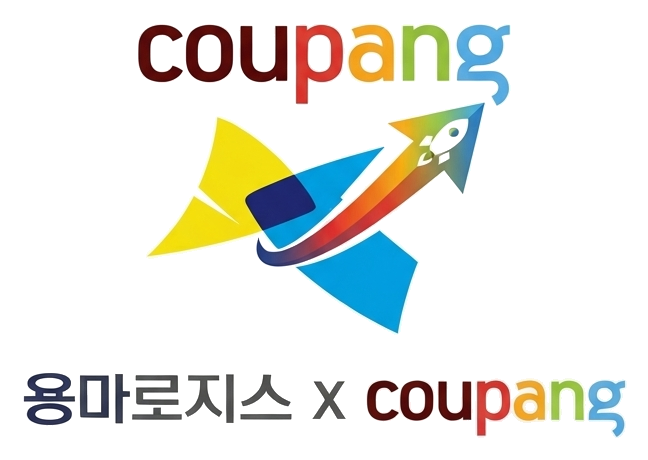

배차 화면을 여는 중
저장된 접속 정보가 맞지 않습니다. 담당자에게 받은 접속 링크를 다시 붙여넣어 주세요.
접속 링크를 넣어 주세요
담당자에게 받은 링크를 한 번만 넣으면, 다음부터는 아이콘만 눌러도 배차 화면이 열립니다.
접속 링크 또는 코드
배차 화면 열기
홈 화면에 앱을 설치하세요
설치하면 아이콘 한 번으로 쿠팡 LS 배차 등록 화면이 열립니다.
앱 설치
설치 없이 열기
안드로이드 크롬
오른쪽 위 ⋮ → "앱 설치" 또는 "홈 화면에 추가"
삼성 인터넷
아래 ≡ → "현재 페이지 추가" → "홈 화면"
아이폰 사파리
아래 공유 버튼 → "홈 화면에 추가"
카카오톡에서 열었다면
오른쪽 아래 ⋮ → "다른 브라우저로 열기" 후 다시 진행